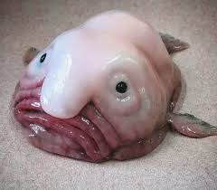
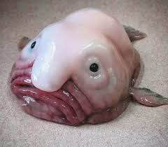

ггггглавная |
рыба-капля |
 

глубоководная донная морская рыба семейства психролютовые, которую часто называют одной из самых причудливых океанских глубоководных рыб на планете[1][2]. Распространена в прибрежных водах Австралии[3]. Предположительно обитает на глубинах 600—1200 м у побережья Австралии и Тасмании, где её в последнее время стали всё чаще доставать на поверхность рыбаки